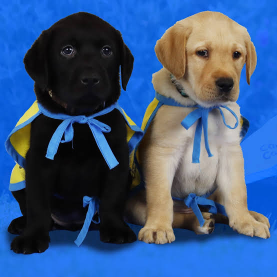
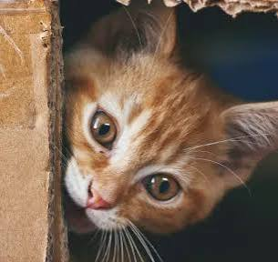
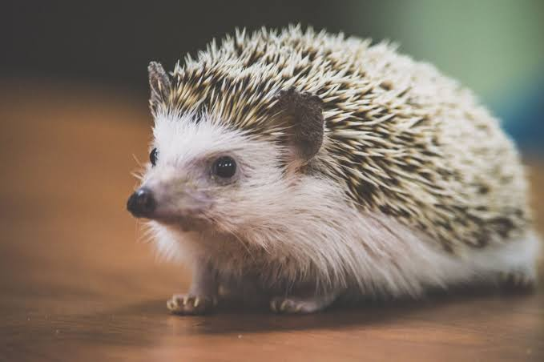
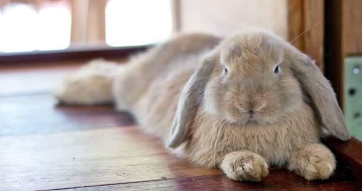
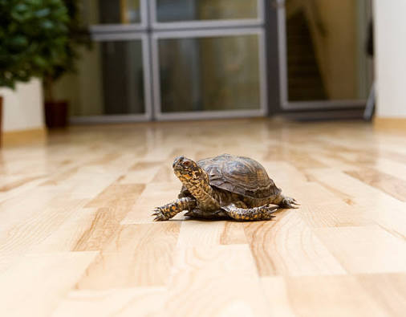

Meet Our Lovely Pets!
Welcome to our pet family! Let's get to know our adorable animals.

1. Jack
Jack is a lovely dog with beautiful black fur. He is friendly and playful. He is Fred's brother.
2. Fred
Fred is a cute dog with golden-brown fur. He loves playing with Jack. They are siblings and enjoy spending time together.

3. Peter
Peter is an adorable cat with a curious personality. He enjoys exploring his surroundings and taking long naps.

4. Bruno
Bruno is a small and gentle hedgehog. He has tiny legs and adorable spikes. He loves exploring quietly.

5. Lorry
Lorry is a sweet little bunny with soft fur and long ears. She enjoys hopping around and eating fresh vegetables.

6. Linda
Linda is a lovely turtle with a hard shell. She moves slowly but enjoys exploring her surroundings.
Our Happy Pet Family
Each pet is special in its own way. We love having them as part of our family!
Basic Needs of Each Pet
1. Jack's Basic Needs
- Nutritious dog food
- Clean drinking water
- Daily walks and exercise
- A comfortable sleeping area
- Regular grooming and health check-ups
2. Fred's Basic Needs
- Healthy and balanced dog food
- Fresh drinking water
- Daily exercise and playtime
- A clean and comfortable shelter
- Love, attention and regular vet visits
3. Peter's Basic Needs
- Nutritious cat food
- Fresh drinking water
- A clean litter box
- Toys and scratching posts
- A comfortable resting place
4. Bruno's Basic Needs
- Suitable hedgehog food
- Clean drinking water
- A warm and safe enclosure
- A hiding place
- Space for exercise and exploration
5. Lorry's Basic Needs
- Unlimited fresh hay
- Fresh vegetables and suitable pellets
- Clean drinking water
- A spacious and safe enclosure
- Toys and space to exercise
6. Linda's Basic Needs
- Species-appropriate turtle food
- Clean water
- A suitable habitat
- Proper heating and UVB lighting
- A suitable resting and basking area